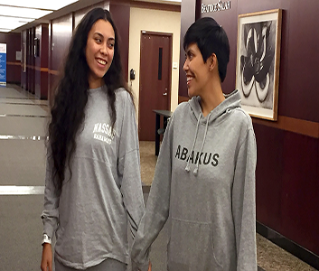

Patient Success Stories
Services/Success Stories Strong Will and Positive Attitude Helps Patient Fight Breast Cancer :- Deidre Smith was diligent about making sure she had a mammogram each year. She came to Cleveland Clinic Florida in 2015 for a second opinion after she was told elsewhere that she had two benign calcifications.
On November 23, 2015, right before Thanksgiving, Deidre was diagnosed with breast cancer in her left breast. Cleveland Clinic Florida radiologist, Maria Artze, MD detected Stage 1 breast cancer in the back wall of her breast tissue.
“I was 47 years old when I received the diagnosis,” Deidre said. “I was in total shock; I had no history of breast cancer in my family. I felt healthy and had no symptoms.”
Breast cancer is the leading cancer for women of all ethnicities in the United States, aside from non-melanoma skin cancer. It results when abnormal cells in the breast tissue, ducts, or glands begin to grow and divide out of control, forming a malignant (cancerous) tumor.
If untreated, the malignant tumor cells can grow into the tissue surrounding the breast and can travel through the body’s lymphatic system to other organs in the body. Caucasian women have a slightly higher risk of developing breast cancer; however African American women have a slightly higher risk of developing aggressive, advanced-stage breast cancer.
“Our biggest risk factor for breast cancer is the fact that we are women,” said Margaret Thompson, MD, breast surgeon at Cleveland Clinic Florida's Breast Center. “Increasing age is the second risk factor, however, we are seeing breast cancer more often in younger women, due to more awareness and advanced imaging.”
For Deidre, treatment for breast cancer included a bilateral mastectomy in December 2015, followed by chemotherapy and breast reconstruction.
“To beat this cancer, my competitive side came out, similar to what happens when I play tennis,” Deidre said. “My daughter was 15 years old at the time and I wanted to live. Creating a healthy routine kept me focused. I ate healthy. I walked every day. I did everything my doctors advised me to do, including drinking three liters of water daily during chemo.”
Experts agree that maintaining a healthy lifestyle and a positive outlook are important factors in helping patients manage their diagnosis, treatment and ultimately, survivorship.
“Cleveland Clinic Florida was awesome,” Deidre said. “They made me feel like I was part of their family and I felt very comfortable. They helped me navigate through all my procedures and doctor visits. My goal was to get to the finish line.”
Deidre says she now looks at life differently and does not worry about small stuff anymore.
“I appreciate all the things I do every day and I embrace life, even if it’s taking time to read a book or watch television with my daughter. My family and friends and certain people that I met along my journey got me through cancer and I do appreciate every one of them. I had positive thoughts always and never gave up.”
Dr. Thompson stresses that early detection is key to long term survivorship of breast cancer. “Most breast cancers, if detected early, are not life threatening,” she said. “That is why screening mammograms are so important.”
Source : Cleveland Clinic
Other Stories :-
1-Sisters Share Love and Kidney After Transplant Procedure :- Twenty-one year old Jazmine Seranno got the shock of her life in 2015 when she visited the doctor complaining of extreme fatigue and a lack of energy. Not only did she learn that her symptoms were due to Stage 3 renal failure, but also that she had been born with only one kidney........... See More
2-Cleveland Barber “Pays It Forward” and Becomes Advocate for Minority Men’s Health :-Deidre Smith was diligent about making sure she had a mammogram each year. She came to Cleveland Clinic Florida in 2015 for a second opinion after she was told elsewhere that she had two benign calcifications.On November 23, 2015, right before Thanksgiving, Deidre was diagnosed with breast cancer in her left breast. Cleveland Clinic Florida radiologist, Maria Artze, MD detected Stage 1 breast cancer in the back wall of her breast ........... See More